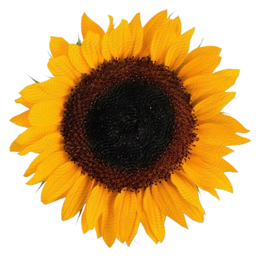

Estação chuvosa em pleno vigor.
O cerrado está verde e exuberante, com gramíneas altas e árvores com folhagem completa.

Sucupira-branca
Planta: Sucupira-branca (Pterodon emarginatus)
Época de Floração: Abril a Junho. É uma das primeiras árvores a florescer massivamente após o fim das chuvas.
Floração e Condições: Floresce no início do período seco, aproveitando a umidade ainda residual no solo. Flores lilás ou roxo-pálido, perfume adocicado; floração abundante.
Relevância para o BloomWatch: Excelente indicador do início da estação seca. A floração roxa se destaca quando a paisagem ainda está relativamente verde, mas as chuvas já cessaram; monitorá-la ajuda a definir o começo do período de estresse hídrico.